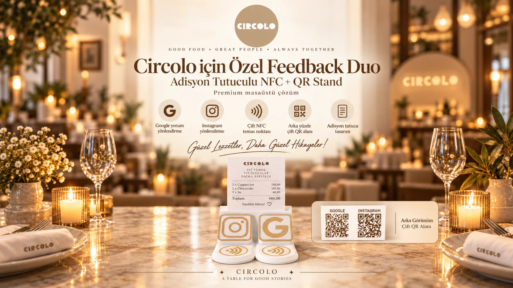
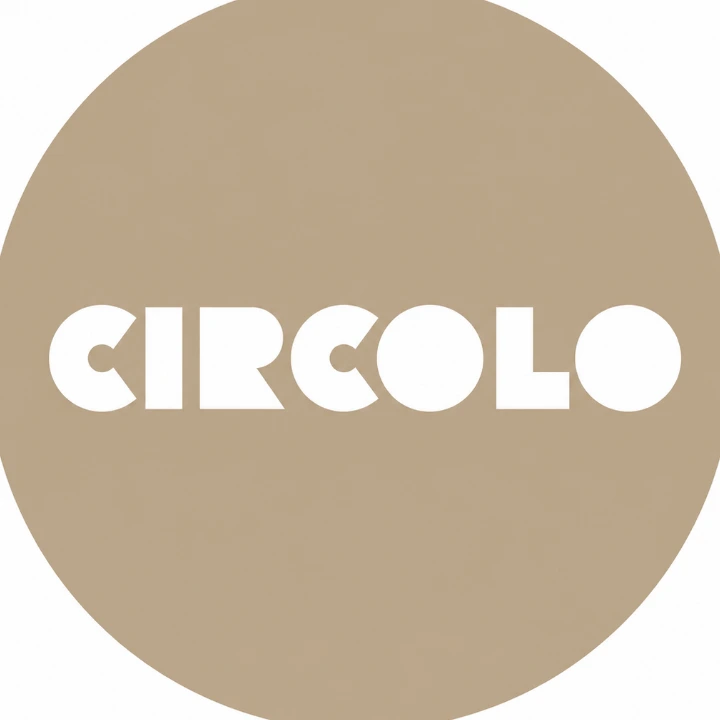
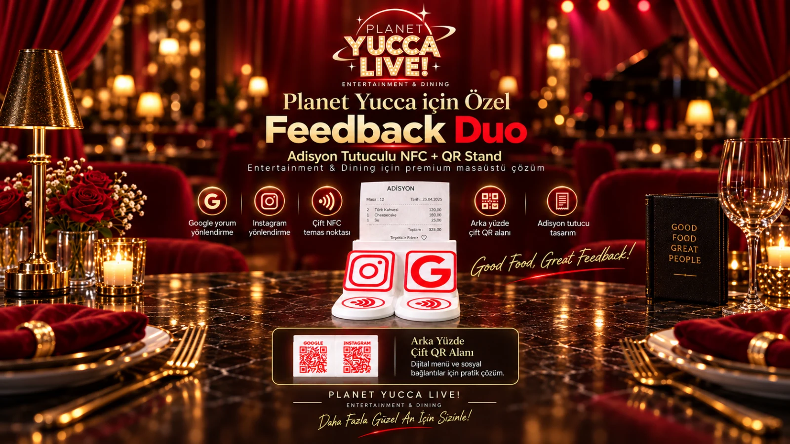
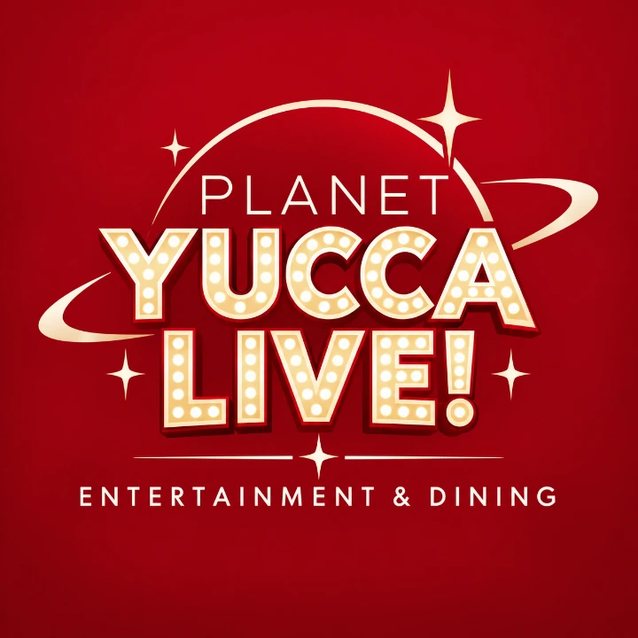

Temassız erişim
Misafir telefonu ilgili NFC alanına yaklaştırarak menü, değerlendirme veya seçilen hedefe geçer.
BG STUDIO NFC RESTORAN
Restoranlar için NFC + QR erişimi, Akıllı Menü, değerlendirme, analitik ve servis taleplerini tek işletme altyapısında birleştiren sistem.

SİSTEM NEDİR?
Her stand işletmenin kullanım senaryosuna göre NFC erişim noktaları taşır. QR opsiyonu aynı hedeflere alternatif erişim sunar. Dijital hedefler panel üzerinden yönetilir.
Misafir telefonu ilgili NFC alanına yaklaştırarak menü, değerlendirme veya seçilen hedefe geçer.
QR seçilirse restoran sistemlerinde masa başına 3 QR eklenir ve ayrı fiyatlandırılır.
Çoklu dil, ürün içerikleri, 14 alerjen bilgi katmanı ve yaklaşık kalori bilgileri desteklenir.
İşletme içi değerlendirme akışı, Google devam adımı ve müşteri deneyimi takibi aynı sistemde buluşur.
STAND
Logo, QR alanları, uygulama ikonları, NFC temas bölgeleri ve restoran kurulumlarında arka yüz masa numarası işletmeye göre hazırlanır.

YAZILIM + FİZİKSEL ÜRÜN
BG Studio NFC yalnızca fiziksel bir stand değildir. NFC ve QR erişimleri dijital deneyim, analitik, feedback ve yönetim araçlarıyla aynı sistemde buluşur.
NFC taramaları, menü etkileşimleri, feedback, yönlendirmeler ve sistem durumu tek merkezden takip edilir.
Akıllı Menü, çoklu dil, içerik, alerjen ve yaklaşık kalori katmanları fiziksel erişim noktalarına bağlanır.
Çözüm tipine göre masa veya stand etkileşimleri, feedback ve yönlendirme performansı izlenebilir.
Dijital hedefler fiziksel ürünü yeniden basmadan güncellenebilir. Bildirim ve yönetim altyapısı sistemin devamlılığını destekler.
STANDART RESTORAN PAKETLERİ
Garson Çağır + Hesap İste tüm Standart Restoran paketlerinde mevcut ortak özelliktir. QR, Menü Tasarımı ve Logo Tasarımı seçimleri ayrı kalemlerdir.
ÖZEL RESTORAN HAZIR PAKETLERİ
Aynı restoran altyapısı kapasiteye göre ölçeklenir. Slider ile masa sayısını değiştir; sağ kartta paket plan bedeli ve seçilen ek hizmetlerle toplam satış güncellensin.
25–120 MASA
Uzun fiyat listesini taramak yerine kapasiteyi slider veya + / − kontrolleriyle değiştir. Mevcut fiyat motoru aynı değerleri hesaplamaya devam eder.
| Kapasite | NFC | Paket plan bedeli | Yıllık yenileme |
|---|---|---|---|
| 25 masa | 75 NFC | 29.900 TL | 9.900 TL |
| 30 masa | 90 NFC | 34.900 TL | 10.900 TL |
| 35 masa | 105 NFC | 39.900 TL | 11.900 TL |
| 40 masa | 120 NFC | 44.900 TL | 12.900 TL |
| 45 masa | 135 NFC | 49.900 TL | 13.900 TL |
| 50 masa | 150 NFC | 54.900 TL | 14.900 TL |
| 55 masa | 165 NFC | 59.900 TL | 15.900 TL |
| 60 masa | 180 NFC | 64.900 TL | 16.900 TL |
| 65 masa | 195 NFC | 68.900 TL | 17.900 TL |
| 70 masa | 210 NFC | 72.900 TL | 18.900 TL |
| 75 masa | 225 NFC | 76.900 TL | 19.900 TL |
| 80 masa | 240 NFC | 80.900 TL | 20.900 TL |
| 85 masa | 255 NFC | 84.900 TL | 21.900 TL |
| 90 masa | 270 NFC | 88.900 TL | 22.900 TL |
| 95 masa | 285 NFC | 92.900 TL | 23.900 TL |
| 100 masa | 300 NFC | 96.900 TL | 24.900 TL |
| 110 masa | 330 NFC | 104.900 TL | 26.900 TL |
| 120 masa | 360 NFC | 112.900 TL | 28.900 TL |
SAHADAN
BG Studio NFC sistemlerinin farklı işletmelerdeki fiziksel ve dijital kurulumlarından seçilen örnekler.


Restoran • Premium Feedback DuoCircolo Kuşadası için adisyon tutuculu 5 adet BG Studio NFC Premium Feedback Duo standı tasarlanıp işletmeye entegre edildi. Her stand 2 NFC ve 2 QR erişimiyle çalışacak şekilde hazırlanarak toplam 10 NFC + 10 QR altyapısı kuruldu. Standların adisyon tutucu bölümü sayesinde hesap ve adisyon kağıtları masa üzerinde düzenli biçimde sunulurken, aynı ürün üzerinden dijital müşteri etkileşimi sağlanıyor. Misafirler NFC veya QR üzerinden doğrudan Google yorum ekranına ya da Circolo’nun Instagram hesabına geçebiliyor. Google ve Instagram yönlendirmeleri, NFC ve QR erişimleri, stand bazlı etkileşimler ve ziyaret verileri BG Studio NFC işletme panelinden takip ediliyor. Google tarafında canlı puan, toplam yorum sayısı ve güncel yorum verileri de sistem içerisinde görüntüleniyor.
Proje detayını gör ↗

Restoran • Premium Feedback DuoPlanet Yucca için adisyon tutuculu 10 adet BG Studio NFC Premium Feedback Duo standı tasarlanıp işletmeye entegre edildi. Her stand 2 NFC ve 2 QR erişimiyle çalışacak şekilde hazırlanarak toplam 20 NFC + 20 QR altyapısı kuruldu. Standların adisyon tutucu bölümü sayesinde hesap ve adisyon kağıtları masa üzerinde düzenli biçimde sunulurken, aynı ürün üzerinden dijital müşteri etkileşimi sağlanıyor. Misafirler NFC veya QR üzerinden doğrudan Google yorum ekranına ya da Planet Yucca’nın Instagram hesabına geçebiliyor. Google ve Instagram yönlendirmeleri, NFC ve QR erişimleri, stand bazlı etkileşimler ve ziyaret verileri BG Studio NFC işletme panelinden takip ediliyor. Google tarafında canlı puan, toplam yorum sayısı ve güncel yorum verileri de sistem içerisinde görüntüleniyor.
Proje detayını gör ↗
 Restoran • Başlangıç Paketi
Restoran • Başlangıç Paketiİstavrit Restaurant için 10 masalık BG Studio NFC Başlangıç Paketi kuruldu. Her masa için özel hazırlanan toplam 10 adet NFC + QR stand, masa bazlı erişim altyapısıyla BG Studio NFC Sistemine bağlandı. Misafirler telefonlarını standa yaklaştırarak veya QR kodu okutarak dijital menüye, Instagram hesabına ve değerlendirme akışına erişebiliyor. Değerlendirme sürecinde misafir önce BG Studio değerlendirme paneline yönlendiriliyor, ardından Google yorum adımına geçebiliyor. İşletme tarafında masa bazlı NFC + QR etkileşimleri, dijital menü erişimleri ve sistem kullanımı BG Studio NFC işletme paneli üzerinden takip ediliyor. Böylece menü, sosyal medya erişimi, müşteri değerlendirmesi ve masa etkileşimleri tek sistem altında yönetiliyor.
Proje detayını gör ↗
 Restoran • Profesyonel Paket
Restoran • Profesyonel PaketYusuf Şef için 15 masalık BG Studio NFC Profesyonel Paket kurulumu gerçekleştirildi. İşletmeye özel hazırlanan 15 adet NFC + QR stand, masa bazlı erişim altyapısıyla BG Studio NFC Sistemine bağlandı. Misafirler NFC veya QR üzerinden Akıllı Menü, Instagram ve değerlendirme akışına erişebiliyor. Akıllı Menü modülünde Türkçe ve İngilizce menü, ürün içerikleri, alerjen bilgileri ve yaklaşık kalori bilgileri sunuluyor. Değerlendirme akışında misafirler önce BG Studio değerlendirme paneline yönlendiriliyor, ardından Google yorum adımına geçebiliyor. İşletme; menü, değerlendirme, sosyal medya ve masa bazlı NFC + QR etkileşimlerini kendisine özel BG Studio NFC işletme paneli üzerinden yönetip takip edebiliyor. Böylece menü, müşteri geri bildirimi, sosyal medya erişimi ve kullanım verileri tek sistem altında toplanıyor.
Proje detayını gör ↗SSS
Hayır. QR opsiyoneldir. Seçilirse masa başına 3 QR eklenir ve QR bedeli paket plan bedelinden ayrı hesaplanır.
Başlangıç, Profesyonel, Premium ve 25–120 masa Özel Restoran Hazır Paketlerinde mevcut ortak sistem özelliğidir.
Güncel kapsam; Türkçe ve İngilizce görsel menü, 8 ek dilde dijital metin menü, ürün içerikleri, 14 alerjen bilgi katmanı ve yaklaşık kalori bilgileridir.
Dijital hedefler sistem yapısına göre uzaktan yönetilebilir. Fiziksel ürünün yeniden üretilmesi her bağlantı değişikliğinde gerekmez.